Путь «Солнце»
От слабой к сильной: Seq 9 «Бард» → Seq 1 «Белый Ангел». Сменить путь можно на «Тиран» или «Зритель» — с Seq 5 и сильнее, зельем на ступень выше (как).
| Seq | Последовательность | Ступень сервера |
|---|---|---|
| 9 | Бард | II |
| 8 | Проситель света | III |
| 7 | Верховный жрец Солнца | IV |
| 6 | Нотариус | V |
| 5 | Жрец света | VI |
| 4 | Неомрачённый | VII |
| 3 | Наставник Справедливости | VIII |
| 2 | Ищущий Свет | — |
| 1 | Белый Ангел | — |
У каждой последовательности: зелье и его ингредиенты (главный — первым), способности, которые она открывает, и отыгрыш — действия, которые переваривают зелье. Ингредиенты указаны с двумя самыми доступными источниками; все — по ссылке. Ингредиенты Seq 9–6 этого пути бывают и в товарах у жителей Торговец Потусторонних и Священник Вечного Палящего Солнца — у каждого по 2 случайных предложения на уровень (цены).
Seq 9 · Бард
Зелье  Бард Зелье, формула
Бард Зелье, формула  Бард Рецепт зелья (Последовательность 9). Эта Seq нужна для ступени II.
Бард Рецепт зелья (Последовательность 9). Эта Seq нужна для ступени II.
Ингредиенты
- Хрустальный подсолнух — крафт: верстак; сундук: Постройки Мира духов — 38 %. Все источники (5)
 Красное вино — сундук: Клад — 40 %; житель: Фермер (уровень «мастер») — 24 изумруда, до 2 сделок. Все источники (4)
Красное вино — сундук: Клад — 40 %; житель: Фермер (уровень «мастер») — 24 изумруда, до 2 сделок. Все источники (4)- Трава середины лета — блок: Низкая трава (днём; в биоме: Равнины, Подсолнуховые поля, Цветочный лес, Луг) — 5 % за блок. Все источники (3)
 Светокаменная пыль — обычный предмет
Светокаменная пыль — обычный предмет Подсолнух — обычный предмет
Подсолнух — обычный предмет
Способности
- Медитация — Медитировать, восполняя духовность
- Священная песнь — Сыграть священный напев, усиливающий вас
- Физическое усиление (пассивная)
Отыгрыш — переваривание за действие и перерыв между засчитанными:
- Использовать нотный блок — 1,4 %, раз в 10 с
- Использовать кафедру — 0,95 %, раз в 15 с
- Размножить животных — 0,47 %, раз в 15 с
- Использовать проигрыватель — 0,76 %, раз в 15 с
- Запустить фейерверк — 0,28 %, раз в 1 с
- Прочитать подписанную книгу — 0,57 %, раз в 20 с
- Поговорить с жителем — 0,38 %, раз в 10 с
Seq 8 · Проситель света
Зелье 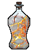 Проситель света Рецепт зелья (Последовательность 8). Эта Seq нужна для ступени III.
Проситель света Рецепт зелья (Последовательность 8). Эта Seq нужна для ступени III.
Ингредиенты
 Порошок ослепительной души — крафт: верстак; существо мода: Полупрозрачный чародей (водится: Мир духов; приходит и Ночью Мира духов) — 25 % за убийство. Все источники (4)
Порошок ослепительной души — крафт: верстак; существо мода: Полупрозрачный чародей (водится: Мир духов; приходит и Ночью Мира духов) — 25 % за убийство. Все источники (4) Сок июльского винограда — крафт: верстак. Все источники (3)
Сок июльского винограда — крафт: верстак. Все источники (3) Тёмный эльфийский лист — блок: Листья тёмного дуба — 6 % за блок. Все источники (3)
Тёмный эльфийский лист — блок: Листья тёмного дуба — 6 % за блок. Все источники (3)- Светокаменная пыль — обычный предмет
 Кусочек золота — обычный предмет
Кусочек золота — обычный предмет
Способности
- Обнаружение зла — Подсвечивает всех злых существ и нежить вокруг
- Заклинания Солнца — Простые заклинания домена Солнца, особенно действенные против нежити
- Священный свет — Низвести священный свет
Отыгрыш — переваривание за действие и перерыв между засчитанными:
- Сварить зелье — 0,84 %, раз в 15 с
- Использовать стол зачаровывания — 0,84 %, раз в 10 с
- Убить горящего моба — 0,84 %, раз в 5 с
- Встретить рассвет — 0,84 %, раз в 1 мин
- Сохранять полное здоровье — 0,17 %, раз в 20 с
- Поставить свечу — 0,42 %, раз в 10 с
Seq 7 · Верховный жрец Солнца
Зелье 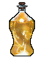 Верховный жрец Солнца Рецепт зелья (Последовательность 7). Эта Seq нужна для ступени IV.
Верховный жрец Солнца Рецепт зелья (Последовательность 7). Эта Seq нужна для ступени IV.
Ингредиенты
 Красный гребень Петуха рассвета — существо мода: Дервиш (водится: Мир духов; приходит и Ночью Мира духов) — 22 % за убийство. Все источники (3)
Красный гребень Петуха рассвета — существо мода: Дервиш (водится: Мир духов; приходит и Ночью Мира духов) — 22 % за убийство. Все источники (3) Солнечное эфирное масло — крафт: верстак. Все источники (3)
Солнечное эфирное масло — крафт: верстак. Все источники (3) Порошок пальчатого цитрона — крафт: верстак; существо мода: Гнойная рука (водится: Мир духов) — 14 % за убийство. Все источники (4)
Порошок пальчатого цитрона — крафт: верстак; существо мода: Гнойная рука (водится: Мир духов) — 14 % за убийство. Все источники (4) Золотое яблоко — обычный предмет
Золотое яблоко — обычный предмет Огненный порошок — обычный предмет
Огненный порошок — обычный предмет
Способности
- Огонь света — Поразить врагов священным огнём
- Очищающий разрез — Священный удар перед собой
- Солнечный ореол — Золотой ореол над головой усиливает вас и союзников
- Священная клятва — Усилить собственные атаки
- Призыв священного света — Призвать священный свет с небес
Отыгрыш — переваривание за действие и перерыв между засчитанными:
- Съесть золотое яблоко — 0,74 %, раз в 10 с
- Покормить животное — 0,37 %, раз в 10 с
- Применить «Солнечный ореол» — 1,5 %, раз в 20 с
- Использовать маяк — 0,74 %, раз в 30 с
- Встретить рассвет — 0,59 %, раз в 1 мин
- Использовать стол зачаровывания — 0,44 %, раз в 10 с
Seq 6 · Нотариус
Зелье 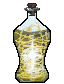 Нотариус Рецепт зелья (Последовательность 6). Эта Seq нужна для ступени V.
Нотариус Рецепт зелья (Последовательность 6). Эта Seq нужна для ступени V.
Ингредиенты
 Кристаллизованные корни — крафт: верстак; существо мода: Каменный голем (водится: весь верхний мир) — 6,7 % за убийство. Все источники (4)
Кристаллизованные корни — крафт: верстак; существо мода: Каменный голем (водится: весь верхний мир) — 6,7 % за убийство. Все источники (4) Сок Сияющего древа духовного договора — пустая бутылка: Пещерная лоза, Стебель пещерной лозы, Светящийся лишайник — 40 % за попытку, бутылка остывает 1 с. Все источники (3)
Сок Сияющего древа духовного договора — пустая бутылка: Пещерная лоза, Стебель пещерной лозы, Светящийся лишайник — 40 % за попытку, бутылка остывает 1 с. Все источники (3) Сок водяного папоротника — пустая бутылка: Ламинария, Стебель ламинарии, Морская трава, Высокая морская трава — 50 % за попытку, бутылка остывает 1 с. Все источники (3)
Сок водяного папоротника — пустая бутылка: Ламинария, Стебель ламинарии, Морская трава, Высокая морская трава — 50 % за попытку, бутылка остывает 1 с. Все источники (3)- Светокаменная пыль — обычный предмет
 Бумага — обычный предмет
Бумага — обычный предмет
Способности
- Бог говорит: действует — Усилить свои атаки, воззвав к своему богу
- Бог говорит: не действует — Ослабить врагов, воззвав к своему богу
Отыгрыш — переваривание за действие и перерыв между засчитанными:
- Поторговать с жителем — 0,95 %, раз в 20 с
- Использовать наковальню — 0,32 %, раз в 10 с
- Применить «Бог говорит: действует» — 1,3 %, раз в 20 с
- Создать книгу — 0,38 %, раз в 20 с
- Поставить табличку — 0,38 %, раз в 15 с
- Использовать кафедру — 0,38 %, раз в 15 с
Seq 5 · Жрец света
Зелье 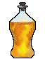 Жрец света Рецепт зелья (Последовательность 5). Эта Seq нужна для ступени VI.
Жрец света Рецепт зелья (Последовательность 5). Эта Seq нужна для ступени VI.
Ингредиенты
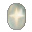
Чистый белый сияющий камень — крафт: верстак; сундук: Постройки Мира духов — 10 %. Все источники (3)- Розмарин — блок: Папоротник, Раскидистый папоротник (в биоме: тайга) — 6 % за блок.
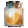
Сок пальчатого цитрона — крафт: верстак; существо мода: Гнойная рука (водится: Мир духов) — 5,7 % за убийство.- Золотой блок — обычный предмет
- Огненный порошок — обычный предмет
Способности
- Духовное зрение
- Свет святости — Призвать с небес пылающий столп света
- Очищающий ореол — Создать ореол, очищающий всё вокруг
Отыгрыш — переваривание за действие и перерыв между засчитанными:
- Убить горящего моба — 0,53 %, раз в 5 с
- Убить моба, не нацеленного на вас — 0,26 %, раз в 5 с
- Применить «Свет святости» — 1,1 %, раз в 20 с
- Убить нежить — 0,42 %, раз в 5 с
- Поставить факел ночью — 0,21 %, раз в 5 с
- Сохранять полное здоровье — 0,11 %, раз в 20 с
Seq 4 · Неомрачённый
Зелье 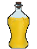
Ингредиенты
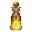
Золотая кровь — сундук: Постройки Мира духов — 5,7 %; существо мода: Погибель (водится: Мир духов; приходит и Ночью Мира духов) — 5 % за убийство.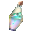
Жидкость камня святого сияния — сундук: Постройки Мира духов — 6,2 %; существо мода: Погибель (водится: Мир духов; приходит и Ночью Мира духов) — 1,7 % за убийство.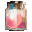
Сок мутировавшего пальчатого цитрона — существо мода: Гнойная рука (водится: Мир духов) — 2,9 % за убийство.- Светокамень — обычный предмет
- Огненный стержень — обычный предмет
Способности
- Гадание
- Мифическая форма
- Пылающее солнце — Призвать огромный шар чистого света, сгущённого священным пламенем
- Святое око — Наполнить глаза чистым светом и испустить ослепляющий луч туда, куда смотрите
- Неомрачённое копьё — Сгустить копьё из чистого солнечного света
- Неомрачённое владение — Осветить каждый уголок области и очистить всех существ в радиусе
Отыгрыш — переваривание за действие и перерыв между засчитанными:
- Убить при низком здоровье — 0,63 %, раз в 2 с
- Съесть золотое яблоко — 0,42 %, раз в 10 с
- Применить «Неомрачённое владение» — 0,84 %, раз в 20 с
- Выпить зелье исцеления — 0,34 %, раз в 10 с
- Убить нежить — 0,25 %, раз в 5 с
Seq 3 · Наставник Справедливости
Зелье 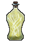 Наставник Справедливости Рецепт зелья (Последовательность 3). Эта Seq нужна для ступени VIII.
Наставник Справедливости Рецепт зелья (Последовательность 3). Эта Seq нужна для ступени VIII.
Ингредиенты
- Наставник Справедливости Характеристика Потустороннего (Последовательность 3) — характеристика Потустороннего
- Кровь Солнечной божественной птицы — существо мода: Погибель (водится: Мир духов; приходит и Ночью Мира духов) — 5 % за убийство.
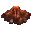
Порошок магмового сердца — сундук: Постройки Мира духов — 2,4 %; существо мода: Погибель (водится: Мир духов; приходит и Ночью Мира духов) — 1,7 % за убийство. Книга и перо — обычный предмет
Книга и перо — обычный предмет- Золотой блок — обычный предмет
Способности
- Стена света — Призвать стену света, не пропускающую врагов
- Меч правосудия — Меч из света обрушивается на врагов сверху
Отыгрыш — переваривание за действие и перерыв между засчитанными:
- Приручить животное — 0,32 %, раз в 15 с
- Убить, будучи в меньшинстве — 0,32 %, раз в 5 с
- Применить «Меч правосудия» — 0,63 %, раз в 20 с
- Убить нежить — 0,19 %, раз в 5 с
- Убить при полном здоровье — 0,19 %, раз в 5 с
Seq 2 · Ищущий Свет
Зелье 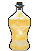 Ищущий Свет Рецепт зелья (Последовательность 2).
Ищущий Свет Рецепт зелья (Последовательность 2).
Ингредиенты
 Ищущий Свет Характеристика Потустороннего (Последовательность 2) — характеристика Потустороннего
Ищущий Свет Характеристика Потустороннего (Последовательность 2) — характеристика Потустороннего- Золотая кровь — сундук: Постройки Мира духов — 5,7 %; существо мода: Погибель (водится: Мир духов; приходит и Ночью Мира духов) — 5 % за убийство.
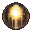
Солнечная сфера — существо мода: Погибель (водится: Мир духов; приходит и Ночью Мира духов) — 5 % за убийство.- Светокамень — обычный предмет
- Золотое яблоко — обычный предмет
Способности
- Власть ангела — Ангельская сила: странствуйте по Миру духов и сокрушайте артефакты
- Копьё света — Призвать копьё чистого белого света; поражённые им враги не смогут бежать
- Посланник Солнца — Обратиться в малое солнце, испепеляя всё в радиусе
- Крылья света — Призвать пару крыльев для полёта
Отыгрыш — переваривание за действие и перерыв между засчитанными:
- Убить сильного моба — 0,21 %, раз в 5 с
- Использовать окружение — 0,21 %, раз в 15 с
- Применить «Посланник Солнца» — 0,42 %, раз в 20 с
- Добыть древние обломки — 0,13 %, раз в 30 с
- Встретить рассвет — 0,13 %, раз в 1 мин
Seq 1 · Белый Ангел
Зелье 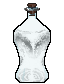 Белый Ангел Рецепт зелья (Последовательность 1).
Белый Ангел Рецепт зелья (Последовательность 1).
Ингредиенты
 Белый Ангел Характеристика Потустороннего (Последовательность 1) — характеристика Потустороннего
Белый Ангел Характеристика Потустороннего (Последовательность 1) — характеристика Потустороннего- Жидкость камня святого сияния — сундук: Постройки Мира духов — 6,2 %; существо мода: Погибель (водится: Мир духов; приходит и Ночью Мира духов) — 1,7 % за убийство.
- Порошок магмового сердца — сундук: Постройки Мира духов — 2,4 %; существо мода: Погибель (водится: Мир духов; приходит и Ночью Мира духов) — 1,7 % за убийство.
- Золотой блок — обычный предмет
- Светокамень — обычный предмет
Способности
- Чистый белый свет — Под чистым белым светом всё обращается в прах
- Явление божественного царства — Явить зародыш божественного царства: мгновенно испепелить всех, кто не Потусторонний, и довести прочих Потусторонних до полного бессилия
Отыгрыш — переваривание за действие и перерыв между засчитанными:
- Убить горящего моба — 0,16 %, раз в 5 с
- Убить сильного моба — 0,11 %, раз в 5 с
- Убить босса — 0,21 %, раз в 1 мин
- Стоять на большой высоте — 0,042 %, раз в 20 с
- Убить нежить — 0,084 %, раз в 5 с